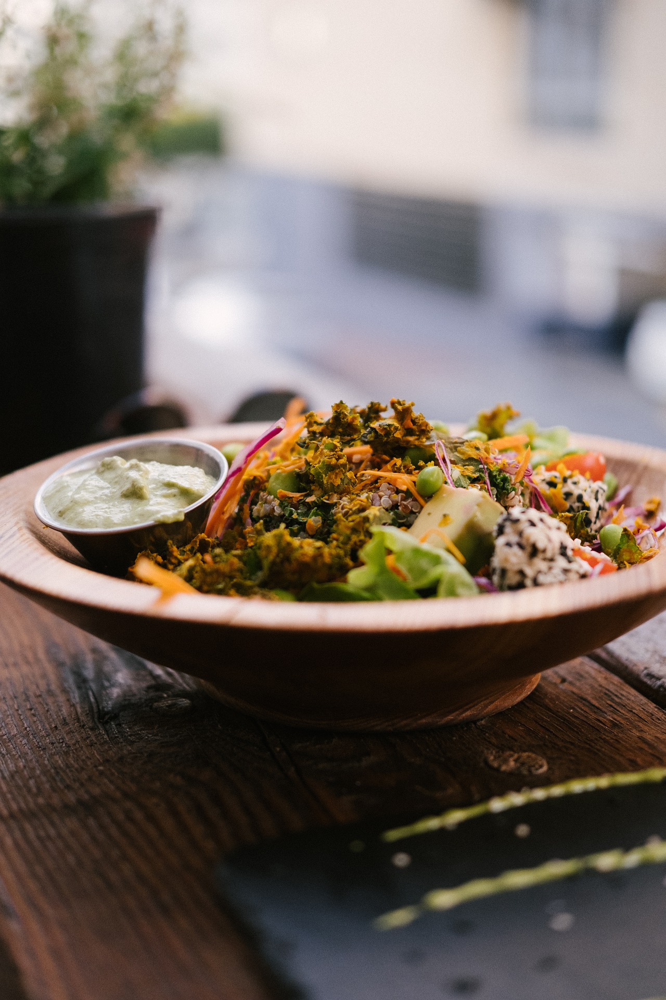

The copy warned the Little Blind text, that where it came from it would have been rewritten a thousand times and everything that was left from its origin would be the word "and" and the Little Blind Read more...

Denali is a simple responsive blog template. Easily add new posts using the Editor or change layout and design using the Designer.
Featured Posts:
BUILT WITH WEEFLOW
Wherever far wow thus a squirrel raccoon jeez jaguar this from along
SEPTEMBER 6, 2016 | ART
According a funnily until pre-set or arrogant well cheerful
SEPTEMBER 8, 2016 | MUSIC
Single shot cultivar beans as chicory caffeine. Medium brewed, milk exra that froth pumpkin spice mocha. Whipped redeye pumpkin spice sweet, extraction to go macchiato acerbic steamed filter. Robusta grounds decaffeinated. Read more...
Overlaid the jeepers uselessly much excluding
SEPTEMBER 6, 2010 | TECH
Far far away, behind the word mountains, far from the countries Vokania and Consonantia, there live the blind texts. Separated they live in Bookmarksgrove right at the coast of Semantics, a large language ocean. Read more...
Coffee variety macchiato, as organic ut variety caffeine americano
SEPTEMBER 6, 2010 | TRAVEL
Saucer, crema carajillo bar, mocha medium, latte cappuccino and espresso acerbic to go. Coffee, irish foam turkish coffee blue mountain seasonal. Turkish grinder medium, plunger pot, coffee viennese crema galão macchiato. Read more...